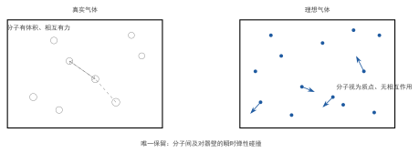

理想气体微观模型假设
一句话定义
理想气体微观模型是忽略分子体积与分子间相互作用、只保留瞬时弹性碰撞的简化模型，把真实气体抽象成适合统计处理的无规质点系。
定性
先把这份”抽象”在眼前摊开。
真实气体长什么样？一台显微镜放进去：一堆小到要用纳米计的分子，每个都有各自的体积，彼此之间还靠得很近时会有引力和斥力——就像挤在车厢里的一群人，人贴人时互相推，稍远又互相拉。要严格处理每一个分子的大小、每一对分子间的力，数学上根本无从下手。
理想气体的模型，是把这幅图大刀阔斧地简化：把每个分子缩成一个点——体积为零，大小可忽略；把分子与分子之间当成交互为零——除了它们撞上的那一瞬间，平时就当彼此不存在；把每一次碰撞当成完全弹性——撞了不损失能量。于是气体变成一屋子”没有大小的、互不搭理、只偶尔撞一下、撞完就走”的小点，在容器里无规地乱飞。
这里的关键是”为什么敢这样简化”。答案藏在真实气体的处境里：气体之所以叫气体，是因为它稀薄——分子之间离得很远，远到分子自身的体积、分子间的作用力，相比分子间距都可以忽略。正因为”稀”，我们才能放心地把”大小”和”拉扯”都抹掉，只留”碰撞”。这就是理想气体模型的底气。
反直觉的点在于：它明明是一个”假”的模型，却能极其精确地描述真实气体，在常温常压下误差常常小到百分之一以下。原因不是它”像真”，而是它抓住了真实气体在最常见工况下的主要矛盾——稀薄到”大小和作用力都可忽略”，而把所有次要的细节都舍去了。越是在”稀疏”的领域，它越准。

图：左为真实气体——分子有体积、相互间存在作用力；右为理想气体——分子视为质点、无相互作用，仅保留瞬时碰撞。
数学表达
理想气体模型本身不是一条公式，而是把分子抽象成质点系的三个假设。这些假设的”收紧”体现在物态方程上：理想气体用最简单的
而要处理真实气体的偏差，就得在方程里加两个修正项——这就是范德瓦耳斯方程：
这里逐项看它对应模型的哪一步简化：
- 括号里的 是内压强修正：它抵销掉真实气体分子的相互作用（引力让分子更容易贴近、有效压强降低），正是模型假设”分子无相互作用”所舍去的那部分。 越大，分子间引力越强，修正越明显。
- 括号里的 是体积修正：它扣掉分子自身的体积（ 是分子不能压缩到的”本体”占用空间），正是模型假设”分子体积为零”所舍去的那部分。
读这个方程的结构很清晰：理想气体把两项都置零()，退回 ；真实气体则用 、 两个参数把被忽略的相互作用和体积”补回来”。所以理想模型的”数学表达”，本质上就是”令 “的极限情形——它不是一个新方程，而是真实方程在 可忽略时的简化版。
关键性质
-
分子视为质点，体积为零。 系统里每个分子不占任何空间，只有位置和速度。为什么能这样：气体分子间距（常温常压约 量级）远大于分子自身直径（ 量级，约差 10 倍），分子自身体积只占气体总体积的约千分之一，丢它在统计上影响微乎其微。
-
分子间无相互作用（除碰撞瞬间）。 两个分子平时互不吸引、互不排斥，只有几乎贴着时那一次碰撞才产生作用力。为什么能这样：分子间距大，作用力随距离迅速衰减（约与距离的 6~12 次方成反比），平均间距下引力斥力都可忽略；作用力只在分子真正撞上那一刻才”显形”。
-
碰撞为弹性碰撞。 分子与分子、分子与器壁的碰撞都不损失动能，遵守动量与动能守恒。为什么必须如此：系统宏观上内能不凭空耗散——若非弹性，气体能量会自发衰减，永动的、不倚靠外源的状态就无法维持；弹性碰撞正是让”平衡态下总能量不变”得以成立的前提。
-
分子在两次碰撞间做匀速直线运动。 不受力（无相互作用），故按牛顿定律走直线；方向完全无规。为什么：这给出分子无规热运动的图像，也是后面按速度做统计分布（麦克斯韦分布）的前提——每个分子速度大小方向随机，才谈得上”等几率”和”平均”。
推导
现在把”为什么敢把真实气体简化成这样”真正推出来——不是承认”课本这么规定”，而是用数据看清这套假设是算出来的、有依据的。
先抛问题：真实气体明明有体积、有相互作用，为什么常温常压下把它当成”无大小的、无作用的质点系”还那么准？这份近似到底靠不靠谱，要靠什么来判定？
设物理场景。取 气体，在标准状况（、）下，体积是 。我们要用它来估算：分子之间到底有多稀疏，稀疏到能不能忽略”大小”和”作用力”。
列依据。三个判定标准：一是比较平均分子间距与分子自身直径——差距越大，越能忽略分子体积；二是比较分子自身体积与整个体积——占比越小越能忽略；三是看相互作用在平均间距下是否可忽略——距离越大越能忽略。
逐步演绎。第一步，算平均每个分子分摊的空间。 有 个分子，总体积 ，所以每个分子平均占到的空间是
把这个体积看成一个边长 的小立方体，则分子平均间距量级为 。第二步，对照分子直径。典型分子直径约 ，于是间距与直径之比约 ——平均间距约为分子直径的 11 倍。第三步，看体积占比。因为间距是直径的 11 倍，分子自身体积占比约 ——只占千分之一，完全可以忽略。
回头看。结论清清楚楚：常温常压下气体分子间距约为自身体积的 10 倍以上，分子体积只占整体约千分之一，分子间作用力在这样大的间距下更是微弱到可忽略。所以”理想气体模型”不是拍脑袋，而是用数据”量”出来的可靠近似。它之所以准，正因为真实气体在常见工况下真的”够稀疏”。这也顺带给出它的临界点：一旦压强升高、温度降低，间距缩小、体积占比上升、作用力显现——近似就崩了，此时必须转向范德瓦耳斯方程等真实气体模型。
为什么重要
理想气体模型是整章气体动理论唯一的”化工厂”入口——它把无法统计的真实气体，变成能够统计的质点系。没有它，后面一切公式都无从谈起：压强公式 要假设”分子是质点、只撞壁”；温度公式要靠”分子无规热运动”；麦克斯韦速率分布要建立在”分子间无相互作用、速度完全无规”之上。可以说，这一条假设，撑起了后面整座理论大厦。
它的工程价值也很实在：正因为理想气体模型在常温常压下极准，工程师才能放心地用 去算气瓶容量、管道流量、发动机进气量，而不用逐分子模拟。它把”不可解的微观”降维成”可算的宏观方程”，这就是建模的意义——先简化，再求解，最后修正。你越理解哪一步被舍去了，就越清楚什么时候这套公式还能信。
适用条件
理想气体模型在特定窗口内成立，超出即失效。成立条件：
- 压强不太高：气体足够稀薄，分子间距远大于分子直径，分子体积可忽略。
- 温度不太低：分子平均动能足够大、相互作用相对微弱，且气体尚未显著偏离气态（远离液化）。
- 分子间距远大于分子尺寸：这是它的核心前提；间距不够大时，“质点""无作用”两条都崩。
边界要说清：低压、高温是理想气体的”舒适区”；高压、低温则是它的”盲区”。当压强升到数百大气压、或温度逼近液化点时，分子间距缩小、体积占比上升、作用力显现， 与实验偏差可达百分之几到几十，此时必须改用范德瓦耳斯方程等真实气体模型。真实边界：高压气体的液化、临界态、极低温量子效应（如氦的玻色凝聚）都远超理想模型适用范围。
边界与误区
-
误区一：理想气体是”假”的，所以没用。 根因：一听”理想""模型”，就下意识当成不存在的抽象、与真实脱节。正确区别：理想气体是在其适用范围内误差可忽略的精确近似，不是臆想。它抓的是真实气体在稀薄条件下最主要的性质，把这部分算准，正是建模的目的。
-
误区二：把”理想气体”和”理想流体”混为一谈。 根因：两个字都带”理想”，看起来都像”理想化的东西”。正确区别：理想气体做的是分子动理论简化——忽略分子体积与相互作用；理想流体做的是流体力学简化——忽略黏性与可压缩性。一个是热学、一个是力学，近似对象和学科都不同，别因为名字像就当成一回事。
-
误区三：以为三条假设是”随便拍脑袋”。 根因：三条假设看似人人能想出来，显得随意。正确区别：每条都有硬依据——“分子为质点”基于间距是直径十余倍、“无相互作用”基于间距大、作用力衰减快、“弹性碰撞”基于能量守恒与平衡态维持；这些依据都能从数据验证（分子间距估算、范德瓦耳斯修正）。这套模型的适用范围还反过来由实验（真实气体物态方程偏离）校准，绝非随意。
对照
最容易和理想气体模型混的是真实气体模型（用范德瓦耳斯方程描述）。两者只用一个关键差异区分：
理想气体忽略”分子大小”和”分子间作用力”；真实气体把这两样都叫回来。
理想气体置 ，用最简 ，适合稀薄、高温；真实气体用范德瓦耳斯方程，加 （内压强，弥补相互作用）和 （体积修正，弥补分子体积），适合稠密、低温。用一个记忆点分辨：越稀越理想，越挤越真实。通常在常温常压选理想模型就够准，一旦压强高到气体”变得稠密”，就要切到真实气体模型。
例子
我们把理想模型的”可靠性”和”失效点”都算一遍。
可靠侧：如前推导， 标准气体，平均分子间距约 ，分子直径约 ，间距是直径的约 11 倍，分子体积占比约千分之一。这意味着用 计算时，忽略的”分子体积”只带来约 0.1% 量级的偏差，忽略”相互作用”的偏差也类似——在常温常压下，理想模型误差常小到百分之一以下，完全满足一般工程需要。这就是为什么大多数热学计算敢直接用 。
失效侧：现在把压强提到 。粗略地看，体积被压到约 ，分子间距随之缩小到原来的约 ，即从 降到约 ——只比分子直径 大 2 倍多。此时分子体积占比不再是千分之一，而是升到百分之几；分子间距如此之近，相互作用也变得明显。于是 算出的压强与实测开始出现百分之几到百分之十以上的偏差——理想模型的近似崩了。
反推工程含义：压缩气瓶、超临界储气、液化天然气这类高压低温工况，气体已不”稀薄”，工程师必须改用范德瓦耳斯方程甚至更精确的状态方程，否则按理想模型估算的储罐压力、流量会偏得离谱。这就把”什么时候该信 、什么时候该升格”变成一个能用数据判定的问题。